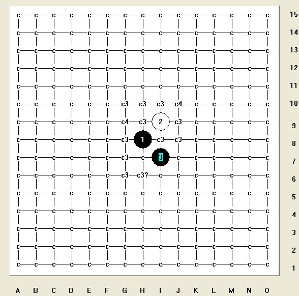

蒲月必胜完全终结三打整合中
首页
茗弈阁
#1 蒲月必胜完全终结三打整合中 作者：有志青年 发表时间：2010-9-2 15:59:33
点击下载 ［ 茗弈小刀 于 2010-9-3 10:39:16 时花20金币送鲜花一朵］
#2 Re:蒲月必胜完全终结三打整合中 作者：安娜制作所 发表时间：2010-9-2 16:24:01
谢谢,有志老师! 蒲月多打点的谱,手工制作中!大家把知道的不同4手的三打,贡献一下,应改不是太难8! ［ 茗弈小刀 于 2010-9-3 10:39:05 时花20金币送鲜花一朵］
#3 Re:蒲月必胜完全终结三打整合中 作者：越狱行辕 发表时间：2010-9-3 8:37:51
。山口蒲月那里。。整合一下 貌似四打都终结了。。
#4 Re:蒲月必胜完全终结三打整合中 作者：越狱行辕 发表时间：2010-9-3 8:38:29
依然感谢楼主无私奉献
#5 Re:蒲月必胜完全终结三打整合中 作者：茗弈小刀 发表时间：2010-9-3 10:38:54
谢谢娜娜宝贝！
#6 Re:蒲月必胜完全终结三打整合中 作者：小帮帮 发表时间：2010-9-3 13:54:56
好象只有最强4做了，其他的都没动---------
#7 Re:蒲月必胜完全终结三打整合中 作者：安娜制作所 发表时间：2010-9-3 15:55:32
是啊!带头做,没思路!只添了几个三打,其它的慢慢补啊!大家每人出点力就很快了!
如果楼上老师愿意做,我也可以提供一些四的打点,或局部的成谱给你!
#8 Re:蒲月必胜完全终结三打整合中 作者：自来水 发表时间：2010-9-3 16:24:46
各位帮忙围歼四打两个白4，三打本人已经发了
#9 Re:Re:蒲月必胜完全终结三打整合中 作者：安娜制作所 发表时间：2010-9-4 8:19:45
呵呵,我也做了一些了! LS 的谱,我已收下,争取多做些四打!
#10 Re:Re:Re:蒲月必胜完全终结三打整合中 作者：安娜制作所 发表时间：2010-9-4 8:20:27

#11 Re:蒲月必胜完全终结三打整合中 作者：安娜制作所 发表时间：2010-9-4 8:23:15
c后面没数字的是2打 c3=该四手做好的是三打, c4=该四手做好的是四打,带问号表示正在做,未完成!
#12 Re:蒲月必胜完全终结三打整合中 作者：冷酒一杯 发表时间：2010-9-4 10:48:46
我们的进展：4在F10完成5打必胜；4在G7完成7打必胜；H6-5打，J6-6打，J9-3打。其余F11至K5区域内的4均为4打必胜。
主力为侯军学棋。
#13 Re:蒲月必胜完全终结三打整合中 作者：安娜制作所 发表时间：2010-9-4 11:26:01
呵呵,都悄悄的在做啊!? 我发贴想做了,并且做了一些,才说做到5,6,7打了!
干嘛不把谱留下来!? 留下谱,人可以走了! (我自己做三打谱,做完就在爱五子网共享,做完四打就去做花月,做谱的乐趣就在于此8 )
(我自己做三打谱,做完就在爱五子网共享,做完四打就去做花月,做谱的乐趣就在于此8 )
#14 Re:蒲月必胜完全终结三打整合中 作者：冷酒一杯 发表时间：2010-9-4 12:14:48
老师，你找原作者侯军。我没权发啊。
#15 Re:蒲月必胜完全终结三打整合中 作者：冷酒一杯 发表时间：2010-9-4 12:22:45
花月他也完成了任意4的至少3打。
#16 Re:蒲月必胜完全终结三打整合中 作者：安娜制作所 发表时间：2010-9-4 14:44:30
谢谢!不用了,我自己会做好的!